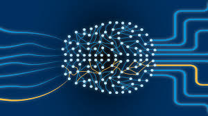

Deep Learning is a subset of Machine Learning that uses artificial neural networks (inspired by the human brain) to process large amounts of data. It is especially useful for image recognition, speech recognition, and natural language processing. Examples include facial recognition and voice assistants like Siri or Alexa.
NLP enables machines to understand, interpret, and respond to human language. It powers applications like chatbots, language translation tools, and voice-activated assistants. ChatGPT, which you're using right now, is an example of an NLP-based system.
Robotics combines AI with physical machines to perform tasks in the real world. Robots can be programmed to use AI to navigate, detect objects, and make decisions. This is used in manufacturing, healthcare, military, and space exploration.